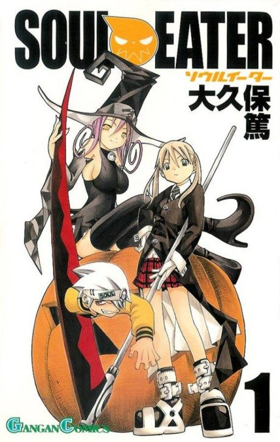

Animeter
 Anime
Anime
Manga2008 · Action, Adventure, Comedy
Soul Eater
ソウルイーター
AniList7.7
Animeter—
Episodes51 ep
MangaCh. 37
Key events
These are spoilers. They stay blurred until you reveal them, one at a time or all at once.
Introductions Ep 1–6
- Maka and Soul lose all their collected souls after mistaking the cat Blair for a witch.
- The students' make-up lesson leads them to the eccentric meister Franken Stein.
- Stein beats all three teams and becomes an Academy teacher.
- Kid enrolls and loses his first fight when his symmetry is ruined.
Crona and the Black Blood Ep 7–13
- Soul is badly wounded shielding Maka from Crona and is infected with black blood.
- Black Star and Tsubaki face her soul-eating brother Masamune, and Tsubaki absorbs his soul.
- Kid and Black Star find the legendary Excalibur and quickly abandon it.
- Maka and Soul's wavelengths fall out of sync before they defeat the immortal werewolf Free.
Exams and Ghost Ship Ep 14–17
- Maka tops the class on a huge written exam.
- Kid's team investigates a ghost ship and runs into Crona.
- Ox becomes the latest victim of Excalibur's insufferable personality.
Revival of the Kishin Ep 18–24
- Maka embraces madness to reach Crona's heart and befriends them.
- Stein defeats Medusa, but Eruka injects black blood into the Kishin.
- Asura awakens, fights Lord Death and flees to spread madness across the world.
Arachnophobia Ep 25–33
- Crona enrolls at the DWMA and Marie becomes Stein's partner.
- Arachne reveals herself and vows revenge on Lord Death.
- Medusa returns in the body of a little girl.
- Maka, Black Star and Kid finally achieve a three-team soul resonance.
Battle for Brew Ep 34–36
- Soul uses his inner Little Demon's piano to link everyone's wavelengths.
- The seven students combine attacks against Mosquito.
- Arachnophobia gets away with Brew.
Crona's Escape and Medusa's End Ep 37–45
- Crona flees and confesses their betrayal to Maka and Soul.
- Medusa surrenders to the DWMA in a trade, and Stein disappears.
- The DWMA storms Arachne's castle while Maka goes after Crona.
- Crona is badly hurt saving Maka, and Maka and Soul defeat Medusa.
The Final Battle with Asura Ep 46–51
- Black Star masters the Enchanted Sword and beats Mifune.
- Asura kills Arachne, and Lord Death is wounded protecting Kid.
- Maka frees Soul from the black blood, and Kid awakens his true power.
- Maka's courage shatters Asura's fear, and she defeats him with a punch.